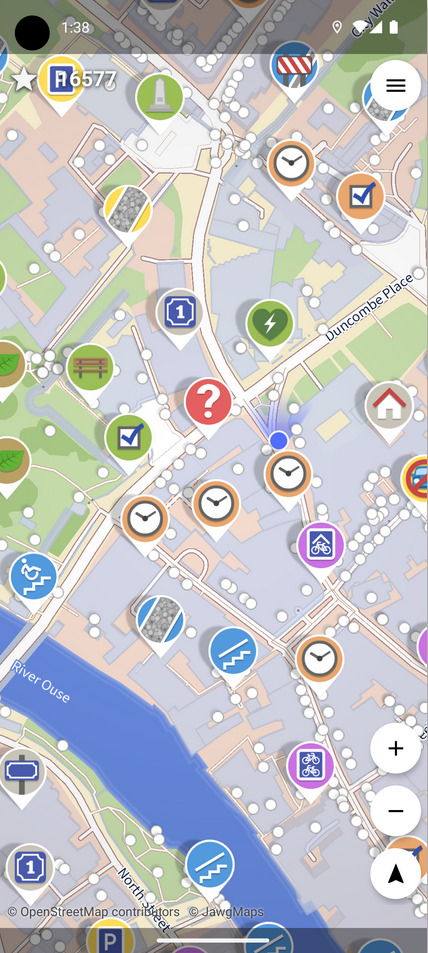

Giovanni's Diary > Programming > Notes >
Contributing to Openstreetmap
Lately I have been contributing to Openstreetmap and I am really enjoying it.
Openstreetmap is a shared effort to map the entire globe, leaded by individual contributors worldwide, in a free and transparent way. You can browse the map on the openstreetmap website and edit it directly via the web editor after making an account. What you notice after a while is that each item, each area, each bench or tree was placed there by someone, and one bench after the other people created a complete map of the world.
I find this fascinating because when I am out contributing to the map I feel like I am documenting a certain place in time, like taking a snapshot of it. I know my contribution to the map is only temporary: shops will close, streets get changed, benches are moved. Still, what I care the most is how the place looks like now that I am in it, even if It is not forever, and I want to keep a record of it. You could compare the map now with the map in 50 years and see how much It changed, little by little; people in the future will have a more detailed picture of a place in the past.
Contributing to the map is really easy, the editor is intuitive and there is a tutorial which I encourage you do to. Moreover, there are many android apps like StreetComplete which gamify the process and renders It more accessible even for casual users without much effort.
StreetComplete will show you missing data in the map near your location, and you can contribute by answering simple questions like "Is there a traffic island in this crosswalk?" or "Are there lights in this street?". Most of the time you can answer yes or no, you could also fill the opening hours of shops or double check that some places still exists. Overall, this is a very easy app for casual users who want to contribute to Openstreetmap.

Figure 1: Map view in StreetComplete
Another big group that documents knowledge is Wikimedia, which manages things like Wikipedia, you might have heard of this. There is a big community around It, with local communities on many countries and regions to make information available to everyone freely. Similarly, there are local communities for Openstreetmap.
I think the existence of those project is really important and I am really grateful to all the people that have contributed to It. I wish those project to strive and be present and relevant. I'll give my part, even if in small amount, and maybe even inspire other like-minded people to do the same.
Travel: Programming, Index